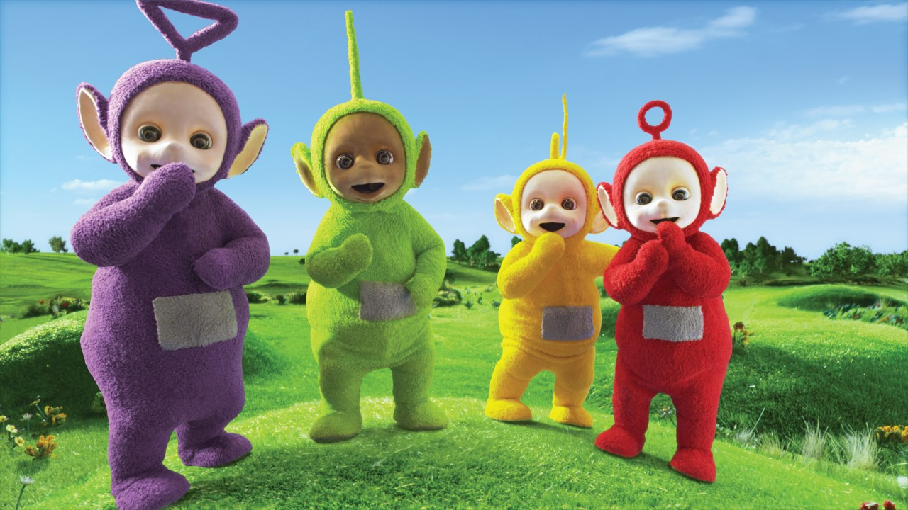

«Телепу́зики»
«Телепу́зики» — британский детский сериал производства BBC при участии компании Ragdoll Productions и DHX Media. Авторы идеи — Энн Вуд и Энди Дэвенпорт. Премьера мультсериала состоялась 31 марта 1997 года. Собственно «телепузики» — четыре персонажа сериала — человекообразные плюшевые существа с антеннами на головах и телеэкранами на животе. Показ завершился 5 января 2001 года, в общей сложности было показано 365 серий. Мультсериал 58 раз перевыпускался на видео, а позднее — на DVD. 7 января 2014 года на YouTube появилась официальная страница этого мультсериала, где с 2015 года выпускаются и планируются новые серии[7]. Также в 2014 году сериал был приобретён для показа Корейским центральным телевидением[8].
Критика
Доктор психологических наук, профессор, заведующая лабораторией психологического развития дошкольников Психологического института РАО Елена Смирнова полагает, что по ряду признаков (абсолютная понятность действий телепузиков, отчетливое речевое сопровождение, замедленность) сериал смоделирован под младенческое сознание. Вместе с тем психолог отмечает ряд специфических особенностей: странный внешний вид телепузиков — неподвижные лица, отсутствие мимики, стеклянные глаза; отсутствие у персонажей — при явной их несамостоятельности — родителей, а также то, что при этом телепузики подчиняются жесткому контролю голоса свыше. Профессор также указывает на отсутствие характера и поступков у телепузиков, что отличает их от классических образцов детской субкультуры.[11] В мае 2007 года уполномоченный по правам ребёнка в Польше Ева Совиньская сообщила, что намерена обратиться к психологам для проведения анализа передачи. Незадолго до этого польские власти предприняли ряд шагов в сторону запрета пропаганды гомосексуализма среди детей[12]. Совиньская предположила, что один из персонажей может иметь гомосексуальный подтекст[13]. «Я обратила внимание на то, что Тинки-Винки носит женскую сумочку, и не понимала, что это мальчик», — пояснила она[14].
Персонажи
Героями сериала являются четыре плюшевых существа с антеннами на головах и телемониторами в животах: Тинки-Винки, Дипси, Ляля и По. Они являются бесполыми существами, однако Тинки-Винки и Дипси позиционируются как мальчики, а Ляля и По — как девочки.
Тинки-Винки
Тинки-Винки (англ. Tinky-Winky; играли Дэйв Томпсон, Марк Хинихан, Саймон Шелтон) — самый крупный и старший телепузик фиолетового цвета со светлым лицом и с треугольной антенной на голове[10]. Любимая игрушка — красная сумка.
Дипси
Дипси (англ. Dipsy; играл Джон Симмит) — зелёный телепузик с коричневым лицом (в отличие от других телепузиков) и со стержнеобразной антенной. Обожает свой черно-белый пушистый цилиндр. Самый упрямый телепузик.
Ля-ля
Ля-Ля/Ла-Ла (англ. Laa Laa; играла Никки Смедли) — жёлтый телепузик со светлым лицом и с антенной в виде спирали. Она любит петь и танцевать. Любимая игрушка — большой мячик.
По
По (англ. Po; играла Пуи Фан Ли) — самая маленькая и младшая из всех. Красный телепузик со светлым лицом и с антенной, заканчивающейся кольцом (по форме напоминает палочку для выдувания пузырей). Любимая игрушка — самокат. Может быть вредной и непослушной. Иногда обижает своих друзей или обижается на них, но потом быстро всё забывает и продолжает с ними общаться.
Предметы
Пузи-тостер. Машинка, которая делает пузи-сливки. Пузи-губка, которая моет посуду. Пузи-блинчики и Пузи-пироги. Пылесос Ну-Ну.